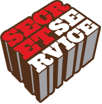

I'm a problem solver. I am passionate about designing and developing simple, usable interfaces for web & mobile that are intuitive, beautiful & memorable!
I'm currently UX Designer and Front End Developer at Evercam.io
2015
Currently I am the lead UX designer and frontend at Evercam.io, a startup in Telefonica's accelerator program Wayra.
User Experience Design, Prototyping, UI, Development, Web & Mobile
Mar 2015
I recently worked on a project for Baremetrics. Baremetrics provide SaaS analytics for Stripe. They asked me to design a solution to help surface actionable date for customers with failing charges with the overall goal of the project to bring a reduction in Failed Charge amounts across their entire user base.
UX, UI, Visual Design, Process
2015

I am currently working on the redesign of the Evercam.io public site. Having undertaken research to create personas for Evercam's current users, the new site will have a different focus. Having previously primarily aimed the product at Developers, I have identified a need to focus the homepage at camera owners and what Evercam can do for them. The user onboarding process is vital and the main goal of the site is to make it as easy as possible for camera owners to add a camera to their Evercam account. To make this easier than before, users will be able to add cameras before having to enter personal details.
High Fidelity Wireframe, Visual Design, User Experience, Development
2015
I am working on the User experience and development of Evercam's dashboard.
Visual Design, UI, User Experience Design, Development
I designed the dashboard from the beginning starting with sketches and wireframes. I then built prototypes to feed into the development process. As lead user experience designer I am responsible for the user flow and UI for the entire dashboard. I ensure the onboarding process and every interaction a user has with Evercam is as seamless and enjoyable as possible from the copy in emails to the documentation of our product. Every interaction, click, API request..
Sep 14'
I lectured for a semester in Visual Communications and Digital Tech at the Dublin Institute of Technology. I was teaching journalists students the principles of design and how to apply them to newspaper & magazine design and also introducing them to WordPress and a range of other tools for improving their workflow and online presence.
Design, Online technologies, Teaching, Learning, Communicating
Jul 14'
As lead UX Designer at Evercam, I worked on developing Evercam Play as a product and improving it's overall usability. I carried out tests, ideated on new features & sketched up wireframes for how those features should be added. I then worked on the UI for the app and carried out tests throughout an agile development process. The app has now received over 1000 downloads with a rating of 4.3/5.
User Experience Design, Wireframe, UI
Nov 14'
I designed the visual identity for a web application called Snapmail and designed the landing page and interface for the web application. I explored Google's material design for the interface's interaction.
User Experience Design, Visual Design, User Interface Design, Material, Responsive
Jun 13'
I designed and developed a responsive e-commerce site for a high end fashion label in Sydney called Shona Joy.
Visual Design, Development, Responsive, Drupal
Jul 13'

I designed and developed a responsive site for Secret Services in Sydney, Australia. Secret Service is a music services company with 3 arms – artist management, public relations services and digital marketing services. The company also serves as the umbrella company for two record labels, a publishing company, two Festivals and a touring company.
Visual Design, Development, Responsive
Jan 15'
Caminoways.com is an online tour operator for walking tours across Spain. I worked in-house with an out-sourced team of developers with a focus on the user experience for our customers and aligning the designs with the needs of the business. It was vital in this project that the complex booking process was made as user friendly as possible and also, that the CMS was properly customised to allow the marketing team at Caminoways.com to easily update the site.
Wireframing, User Research, Visual Design, Development
Mar 13'
ELLIOTT WHEELER
This is the website I designed and developed for Sydney composer Elliott Wheeler. The site is fully responsive and was developed in WordPress.
Visual Design, Development, Responsive